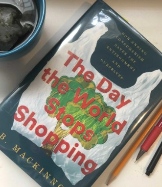
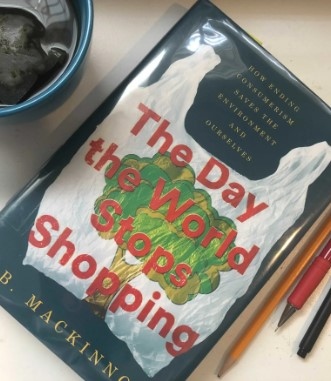

To Speak for the Trees: My Life's Journey from Ancient Celtic Wisdom to a Healing Vision of the Forest
Canadian botanist, biochemist and visionary Diana Beresford-Kroeger's startling insights into the hidden life of trees have already sparked a quiet revolution in how we understand our relationship to forests. Now, in a captivating account of how her life led her to these illuminating and crucial ideas, she shows us how forests can not only heal us but save the planet.
When Diana Beresford-Kroeger--whose father was a member of the Anglo-Irish aristocracy and whose mother was an O'Donoghue, one of the stronghold families who carried on the ancient Celtic traditions--was orphaned as a child, she could have been sent to the Magdalene Laundries. Instead, the O'Donoghue elders, most of them scholars and freehold farmers in the Lisheens valley in County Cork, took her under their wing. Diana became the last ward under the Brehon Law. Over the course of three summers, she was taught the ways of the Celtic triad of mind, body and soul. This included the philosophy of healing, the laws of the trees, Brehon wisdom and the Ogham alphabet, all of it rooted in a vision of nature that saw trees and forests as fundamental to human survival and spirituality. Already a precociously gifted scholar, Diana found that her grounding in the ancient ways led her to fresh scientific concepts. Out of that huge and holistic vision have come the observations that put her at the forefront of her field: the discovery of mother trees at the heart of a forest; the fact that trees are a living library, have a chemical language and communicate in a quantum world; the major idea that trees heal living creatures through the aerosols they release and that they carry a great wealth of natural antibiotics and other healing substances; and, perhaps most significantly, that planting trees can actively regulate the atmosphere and the oceans, and even stabilize our climate.